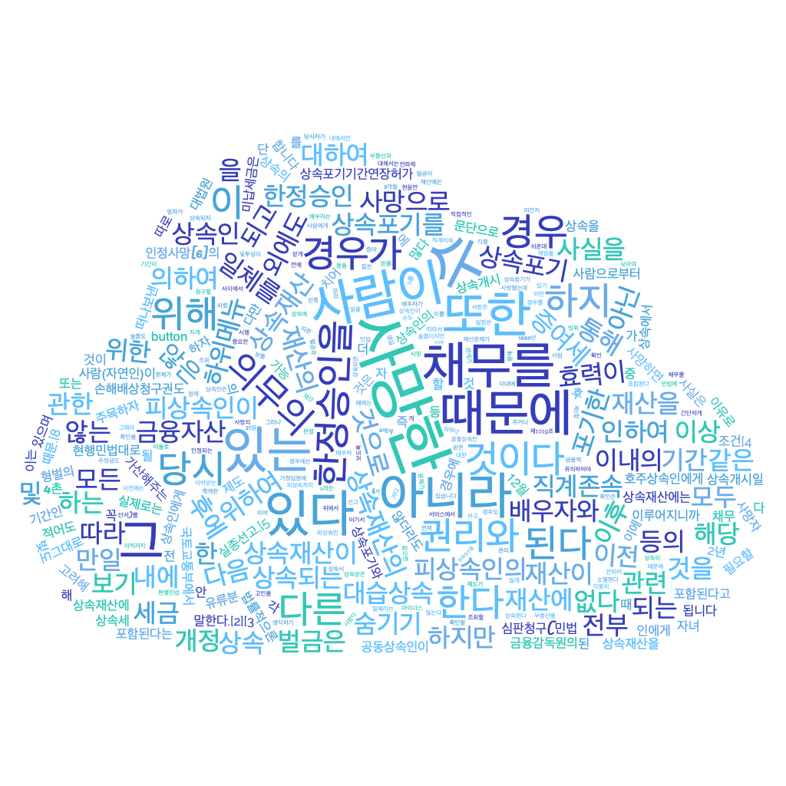

Français
Dans notre corpus de sites web, les cooccurrences du mot « héritage » avec des termes tels que « génétique », « numérique », « culturel », « succession », « épigénétique » et autres, suggèrent une diversité importante de contextes où le concept d'héritage est discuté.
Le terme « succession »pointe probablement vers des discussions juridiques et financières liées à la transmission des biens. Les articles pourraient aborder des sujets tels que la planification successorale, les droits de succession, ou les implications légales entourant l'héritage.
Le terme « culturel » élargit la portée de l'héritage en incluant des discussions sur les valeurs, les traditions, et les pratiques transmises au fil du temps. Les articles pourraient aborder des sujets tels que la préservation du patrimoine culturel, les coutumes héritées, ou les enjeux liés à la transmission culturelle.
La cooccurrence avec des termes comme « philosophie » et « civilisation » suggère une dimension intellectuelle et sociale dans la réflexion sur l'héritage. Cela pourrait impliquer des discussions sur l'héritage philosophique, l'influence des idées sur les générations suivantes, ou encore les héritages culturels et sociaux qui façonnent notre culture.
D'autre part, l'association avec le terme « numérique » reflète probablement la réflexion sur l'héritage dans le monde virtuel, sur internet. Cela pourrait englober des discussions sur la préservation des données en ligne, la transmission des biens numériques, ou encore les questions liées à la confidentialité et à la sécurité des informations héritées numériquement.
Le lien avec le terme « génétique » suggère une exploration de l'héritage biologique, mettant en avant les transmissions génétiques d'une génération à l'autre, notamment dans le contexte médicale.
L’ « épigénétique » s'inscrit dans une compréhension élargie de l'héritage génétique en tenant compte des influences environnementales et comportementales. Les articles pourraient aborder des façons dont des expériences de vie peuvent affecter la transmission de traits génétiques.
Ainsi, ces cooccurrences avec le mot « héritage » couvrent de nombreuses perspectives différentes sur le sens de ce mot en français.
Anglais
Pour réaliser cette analyse, nous avons utilisé le site internet itrameur. J'ai fais en sorte de ne pas avoir de stopword dans mes cooccurrences, en modifiant un paramètre d'itrameur. Nous ne rencontrons pas de problèmes avec les majuscules et le pluriel, car nous avons dans notre script fait en sorte que les autres formes de notre motif se changent en "heritage" pour avoir absolument toutes les cooccurrences autour de toutes les formes de notre terme.
En ce qui concerne l'anglais les occurrences les plus présentes (du rouge foncé au rouge clair) sont "World", "cultural", "Cultural", "Centre", "https", "Feed", "UNESCO". Dans le ton de couleur en dessous, on distingue des termes tels que "Food", "politics", "Intangible", "society", "comment", "sites", "Bank" etc. Je pense qu'il n'est pas nécessaire de prendre en compte uniquement les mots les plus fréquemment rencontrés, car cela peut être trompeur. En effet, nous sommes conscientes que sur une page internet, les mots trouvés peuvent être présents uniquement dans un titre ou dans le nom attribué à un lien URL, ce qui n'est pas représentatif du contenu réel des textes.
Pour cette raison, j'ai décidé de ne considérer que les mots qui semblent être plus pertinents (pour "heritage") et ayant une fréquence de cooccurrence importante, tels que "Cultural"(287 occurences), "UNESCO" (147), "European" (45), "Bank" (14), "Ancestry" (20) "natural" (38), "people" (19), "climate" (13), "informatics" (4), "loss" (25), "preservation" (23), "protection"(23), "conservation", "tourism" (9), destruction (23). Je vais m'attarder sur quelques mots variés.
En examinant la cooccurrence "Ancestry", on peut supposer que cela évoque l'héritage familial et les liens entre générations, en touchant des sujets tels que la préservation et la transmission des origines et traditions quelles soient familiales et/ou ancestrales, ou encore les enjeux liés à la généalogie.
La cooccurrence fréquente de "Cultural" suggère un aspect artistique et sociale dans la réflexion sur l'héritage culturel. Cela pourrait concerner la préservation des pratiques culturelles, ou encore les patrimoines culturels et sociaux qui contribuent à la richesse d'une société.
L'acronyme "UNESCO" apparait aussi très souvent. En particulier avec des termes comme "word" et "cultural" cela montre un lien fort avec la préservation du patrimoine culturel au niveau mondiale. Cela pourrait entraîner des discussions sur la protection du patrioine reconnu par l'UNESCO, la transmission des valeurs culturelles mondiales et les efforts de préservation à l'échelle internationale
Le terme "Bank", laisse penser à un heritage financier et économique. A travers les banque, on peut trouver tout ce qui tourne autour du patrimoine financier, le don de biens matériels.
En regardant ces termes, je constate que le mot "heritage" est réellement utilisé dans des domaines et sujets variés (est ce étonnant ? nous avons fait en sorte que ça le soit lors de la recherche d'URLs). Il peut être associé à la culture des personnes, au tourisme, au patrimoine mondial, au climat et à la préservation qui peut éventuellement évoquer la préservation de la planète. Nous pouvons affirmer que la planète, ce que nous laissons comme héritage aux générations futures, est une notion importante. Le terme "protection" peut concerner à la fois les personnes qui héritent d'un bien, mais aussi la protection de la planète. On y trouve aussi le domaine informatique, mais en moindre mesure.
En ce qui concerne le nuage de mots, nous avons utilisé le code Bash fourni par les enseignants, en y ajoutant une liste de stopwords pour éliminer le bruit. Cela nous renvoie à peu près aux mêmes termes que le tableau des cooccurrences dans itrameur, ce qui est logique en réalité. Les deux méthodes fournissent essentiellement les mêmes résultats, mais sous une forme différente.
Coréen
L'analyse des termes liés au concept concept d'héritage dans le contexte coréen, nous avons identifié une série de termes clés qui reflètent une compréhension holistique englobant les dimensions juridiques, culturelles, numériques et génétiques. L'examen des différentes nuances du terme 'initié' - 개시된, 개시되면, 개시되어, 개시되는 - révèle leur importance capitale dans l'articulation du démarrage des procédures d'héritage. Ces termes marquent non seulement l'amorce des démarches juridiques mais aussi l'éveil des traditions culturelles et l'élaboration des legs numériques, signalant ainsi l'entrée dans une phase de transformation et soulignant la nature dynamique de l'héritage.
Le mot 사망으로, traduit par 'en raison de la mort', occupe une place centrale dans les délibérations sur l'héritage, particulièrement sous l'angle juridique. Il met en lumière le moment où se déclenchent diverses actions et réflexions sur la transmission des biens, des valeurs et des empreintes numériques, illustrant ainsi la façon dont l'héritage répond à la cessation de la vie.
La dichotomie entre 상식 ('connaissance générale') et 전문가 ('expert') illustre l'éventail de compréhension entourant l'héritage, depuis la perception publique jusqu'aux analyses spécialisées. Cette gamme indique la complexité intrinsèque de l'héritage, nécessitant une compréhension à la fois accessible à tous et enrichie par l'expertise, notamment dans les sphères juridiques, culturelles et numériques.
L'intégration du terme 스마트 ('intelligent') dans ce discours souligne l'importance croissante de la technologie dans la préservation et la transmission des héritages numériques. Cela reflète une évolution significative où les actifs numériques et les identités virtuelles acquièrent une importance équivalente aux possessions physiques.
Les aspects juridiques et financiers de l'héritage sont fortement incarnés par les termes 증여 ('donation'), 재산 ('biens') et 세금 ('taxe'). Ils plongent au cœur des mécanismes de transfert des actifs, soulignant les responsabilités et les choix stratégiques, tels que les donations, qui façonnent le patrimoine transmis.
L'approche méthodique de l'héritage est suggérée par 체크리스트 ('liste de contrôle') et 순위와 ('classement'), mettant en avant la nécessité d'une planification rigoureuse et d'une hiérarchisation dans la préparation de la succession légale et la préservation des traditions culturelles.
Les termes Lee et Mr, probablement utilisés comme des exemples génériques, rappellent que l'héritage touche intimement les individus et les familles, chaque cas reflétant une histoire personnelle unique.
Enfin, 관련 ('lié à') et 개념 ('concept') mettent en lumière la diversité et l'étendue du domaine de l'héritage. Ces termes rappellent que l'héritage interagit avec une multitude d'aspects de la vie et de la pensée et qu'il est constamment en cours de réexamen et de redéfinition. Les mots 인하여 ('en raison de') et 해외 ('outre-mer') élargissent davantage le contexte, suggérant que les enjeux de l'héritage peuvent être déclenchés par une variété de facteurs et avoir des répercussions considérables, transcendant les frontières géographiques.
En résumé, notre exploration du discours coréen autour de l'héritage révèle une richesse et une complexité remarquables, tissant ensemble les débuts et fins de vie, les legs tangibles et intangibles, l'individuel et le collectif, ainsi que les implications juridiques, culturelles et technologiques. Cette analyse dépeint l'héritage comme un concept profondément ancré et constamment en évolution, reflet de la diversité des expériences humaines et des cadres sociétaux et technologiques.
Conclusion
En étudiant le mot « héritage » à travers un corpus de sites web en français, anglais et coréen, on découvre beaucoup de mots associés qui nous montrent à quel point ce sujet est diversifié. Pour résumer, les occurrences les plus ou moins importants, nous disent que l'héritage est variés et changeant selon les cultures et les langues. L'idée d'héritage est profondément enracinée et évolue constamment avec différentes influences, qu'elles soient culturelles, familiales, mondiales, génétiques ou numériques.